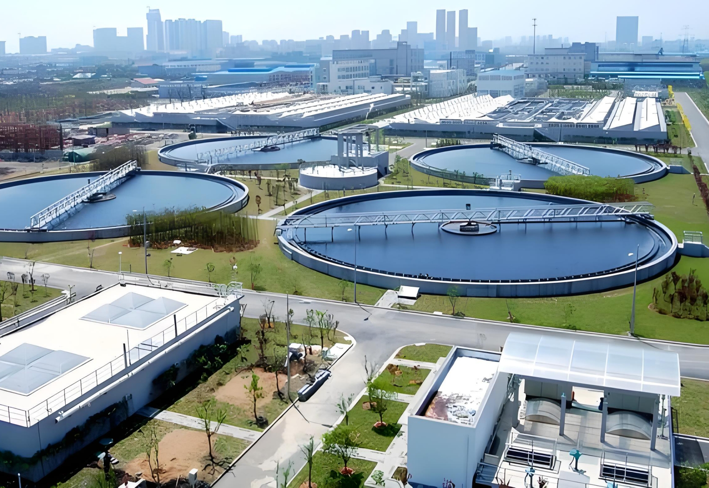
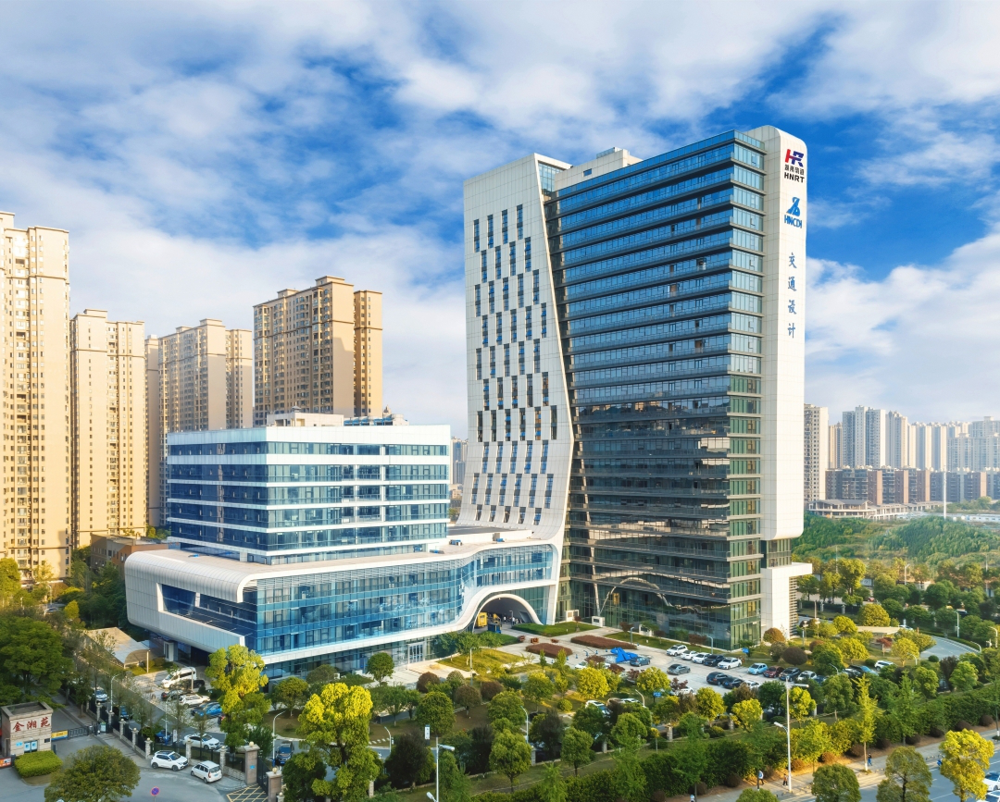
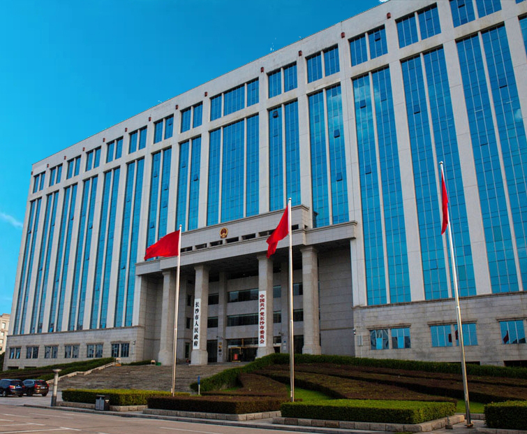

01
先理解，再建议
深入业务场景与组织现实，不用通用模板替代对企业问题的独立判断。
从看清方向，到形成共识，
再到持续行动。
从战略到落地的全程陪伴
央企及省属国企 · 上市公司 · 投融资平台 · 成长企业
行于实处，略见长远
我们的出发点
行于实处
略见长远
01关于行略 / ABOUT
行略咨询成立于2016年3月，是专注于管理咨询的专业服务机构，长期服务于央企及省属国企、上市公司与成长型企业。
业务覆盖战略与规划、组织管控与流程运营、人力资源与绩效激励、并购重组与资本运作，并以培训与管理职能外包等方式，陪伴客户把方案落到日常经营。
AI+ 管理咨询服务先行者。行略咨询是业内较早将 AI 系统性融入管理咨询交付的机构——不把 AI 当作概念包装，而是把它嵌入研究分析、制度起草、经营看板与场景落地的具体环节，帮助客户在智能化转型中抢占行业先手，把技术红利转化为真实的管理动作与经营成果。
顺应管理咨询从方案交付走向实践落地的趋势，专注战略与管理咨询，持续陪伴客户把战略落到日常经营。
拥有十余年一线战略咨询经验的合伙人加入，主导省属国企五年规划与管理咨询项目。
累计 60+ 咨询案例，覆盖央企及省属国企、上市公司、投融资平台与成长企业，多数客户保持两轮以上合作。
高级合伙人
17年战略与管理咨询经验，累计主导60余个咨询案例。经济学硕士毕业；曾长期任职于国内一线战略咨询公司；2018年加入行略咨询，2019年起担任公司法定代表人；2018—2022年受聘为上海联合产权交易所增资评审专家。
擅长战略规划、组织管控与变革、流程运营、内控体系设计、人力资源、并购重组、精细化管理与政府咨询，主要服务客户包括五矿发展、华能集团、湖南建投、望城产投集团、湖南电子信息产业集团等央企及省属国企、上市公司与平台公司。
01
深入业务场景与组织现实，不用通用模板替代对企业问题的独立判断。
02
既分析具体业务问题，也审视战略、组织与机制之间的系统性联系。
03
将建议转化为任务、节奏与责任，通过共创和陪伴提升团队行动能力。
核心优势 / WHY US
长期深度服务工程建设行业，从上游的规划设计与勘察（交通规划勘察设计院、水务规划设计院），到中游的工程施工集团与项目部（湖南建工、五矿二十三冶、湖南楚湘建工等），再到下游的供应链、物资设备与运营环节，对工程产业链的经营逻辑形成完整理解。
以战略为引领，贯通战略规划、组织管控与变革、流程运营、人力资源、内控体系、并购重组、精细化管理全链条，把战略目标解码为组织、流程与人力的协同动作，推动方案真正落地。
2018年以来任项目负责人的省属国企“十三五”“十四五”战略咨询项目，均获得上级单位及客户高度认可；政府类项目在财政部、住建部评审中获得好评，多数客户保持两轮以上合作。
“行”是实践，是每一步扎实的推进；
“略”是判断，是在复杂中看见关键。
02咨询服务 / SERVICES
不以产品套餐为起点，而以您的问题为起点。
以下方向可以独立开展，也可以组合为综合项目。展开每项可查看典型议题与工作产出。
从行业与区域市场研究出发，结合企业资源禀赋与战略意图，形成可执行的发展路径，并支持战略解码、年度经营计划与中期评估。
战略规划报告、业务组合与路径设计、战略解码与实施计划、年度经营目标分解。
围绕总部定位与权责边界，设计管控模式、组织架构、流程与制度体系，并在关键业务条线建立内控与风险控制机制。
管控权责清单、组织与岗位方案、流程图与制度汇编、内控与风险管理手册。
从战略对组织能力的要求出发，完善定岗定编、薪酬绩效与中长期激励机制，并以能力素质评估支撑人才梯队建设。
岗位说明书、薪酬绩效方案、中长期激励方案、能力素质模型与人才盘点结论。
围绕扩张、转型或重组目标，开展标的筛选与尽职调查，设计交易与重组方案，并协助商务谈判与落地实施。
并购可行性研究、尽职调查与交易建议、重组实施方案、治理与授权安排。
围绕工程项目、生产运营与成本管控，梳理计划、进度、成本、质量与考核之间的衔接关系，建立可复盘的经营分析机制。
项目管理手册、经营分析模板、成本管控方案、经营例会与复盘机制。
围绕企业经营管理中的关键风险点，梳理内控缺陷、识别风险等级，设计覆盖主要业务流程的内控体系与风险数据库，形成可执行、可评价的内控手册。
内控缺陷整改清单、内控手册、内控评价手册、风险评估报告、风险数据库。
借鉴华为等标杆企业的流程型组织经验，梳理端到端业务流程，识别断点与冗余，推动流程优化与流程型组织建设，支撑信息化落地。
流程优化诊断报告、流程手册、制度手册、流程型组织设计方案。
围绕产业发展、住房保障、文旅创建等政府议题，开展课题研究、实施方案编制、申报材料准备与政策建议，支撑政府决策与项目落地。
产业发展研究报告、申报实施方案、市场调研报告、课题研究报告。
此外提供管理培训（方法论培训、标杆案例分享、实操培训）、行业研究与管理职能外包等服务。具体服务范围、工作周期与交付内容，将在需求沟通及诊断后共同确认。
03行业经验 / INDUSTRIES
行业不同，管理的约束条件也不同：项目周期、资产结构、监管要求、人才结构，都会改变方案的重心。
我们更关注行业里的具体经营约束，而不是把一套通用模板复制到不同企业。
项目分布 / PORTFOLIO
项目数为不完全统计，包含同一客户的连续合作与多轮服务。

01 / 工程施工与建材
项目周期长、参建方多、安全与成本压力并存。重点在集团管控、项目精细化与成本考核之间建立一致的规则。
02 / 工程设计
设计业务专业分工细、项目协同要求高。围绕战略规划、组织管控与项目管理，推动专业能力与经营效率协同提升。

03 / 环保
环保项目政策与运营约束并重。围绕战略定位、组织协同与运营提升，推动技术能力转化为持续经营成果。

04 / 矿产资源
资产重、周期强、安全环保约束多。战略选择、组织效能与激励约束机制需要同时考虑，避免只改其中一环。
05 / 投融资平台
投融资、建设、运营多重角色并存。平台转型、权责边界与市场化机制，是这类组织常见的核心议题。
06 / 文化旅游
投资回收期长、运营能力要求高。文旅战略、运营模式、服务标准与组织机制，需要一起设计、一起落地。
07 / 高端制造
覆盖电池材料、医疗器械、电子信息等。增长路径、组织升级与人才激励，需要与技术节奏和市场要求相匹配。

08 / 大宗商贸
网络与效率决定成本。供应链协同、流程效率与组织绩效，是这类企业提升经营质量的关键抓手。
09 / 养老服务
面向养老服务机构与康养平台，提供战略规划、服务体系设计、运营模式与人才机制咨询，助力养老服务的标准化与可持续运营。
更多行业领域


以上行业经验来自过往项目积累。具体方案仍需结合企业的发展阶段、业务结构与管理基础，在诊断后共同确定。
04客户与项目 / CLIENTS
公司（含合伙人）长期服务于央企及省属国企、上市公司与成长型企业，覆盖工程建设、能源矿产、交通投资、文旅、医药与商贸物流等行业。
以上为部分合作客户，按公开名称排列。
代表项目 / SELECTED WORK
以下项目仅展示服务范围与工作类型，不涉及客户保密信息，也不构成对客户现状的评价或背书。
连续承担“十二五”“十三五”发展战略规划，覆盖公司总部与下属业务板块。
从集团“十二五”战略规划、供应链体系建设，到三公司“十四五”规划与项目精细化管理。
承担“十三五”“十四五”发展战略规划，并参与多起并购标的调研与方案讨论。
组织管控、流程运营、内控体系与人力资源的系统化设计，推动管理规则落地。
连续承担“十二五”“十三五”发展战略规划，服务产业投资平台的战略选择与路径设计。
围绕企业发展战略、组织管控与市场化经营机制提供咨询支持，推动管理规则与经营动作的衔接落地。
央企与省属国企，议题常涉及集团管控、战略协同、组织效能与市场化机制。
关注增长与规范并重，涉及业务组合、组织升级、股权激励与并购重组。
投融资平台与片区开发平台，关注转型路径、投融资规划与权责机制。
成长型企业与专精特新企业，关注增长战略、组织能力建设与人才激励。
05服务匹配 / FIT
同一项服务，在央企、平台公司、上市公司与成长企业里，切入点和交付重点并不相同。
下面是过往项目中的常见组合，帮助您初步判断适合从哪里开始；实际范围仍以诊断和沟通结果为准。
多层级、多业态，议题常涉及集团管控、战略协同与组织效能。
增长与规范并重，关注业务组合、组织升级与资本市场动作。
承担区域投资与建设任务，关注转型路径、权责机制与市场化激励。
业务增长快、管理基础不一，关注组织能力与关键人才机制。
以上为常见组合示意，不构成固定产品清单。
06AI + 管理服务 / 管理融合 · 先行者
作为 AI+ 管理咨询服务的先行者，我们不把 AI 当作概念包装，而是把它嵌入咨询工作的具体环节：更快完成研究、更规范地沉淀制度、更及时地看见经营数据，帮助客户在智能化转型中抢占行业先手，找到真正值得投入的 AI 场景。
政策、市场与对标资料的快速检索、摘要与结构化，把更多时间留给判断和取舍。
基于企业实际材料生成制度、流程与岗位说明书初稿，再由顾问逐条校准。
把分散的经营数据整理成可读的指标与看板，支持经营例会与决策复盘。
识别适合 AI 的业务场景，评估投入产出，陪跑小范围试点与推广。
数据与资料
AI 提效
顾问判断
管理动作
AI 用于提升信息处理与方案起草效率，判断、取舍与责任仍由顾问和客户团队承担。涉及数据安全时，可按客户要求采用本地化或脱敏方式处理。
07咨询流程 / APPROACH
每个企业的议题不同，但我们始终坚持一套清晰的工作逻辑：用事实减少分歧，用共创形成承诺，用跟踪推动改变。
LISTEN
了解业务背景、管理困惑与项目期待，判断问题是否适合通过咨询方式解决。
初步沟通 · 明确需求边界DIAGNOSE
通过资料研究、访谈与业务分析，区分表面现象和关键矛盾，建立共同事实基础。
调研分析 · 识别关键问题CO-CREATE
与核心团队共同讨论选项与取舍，将建议转化为符合企业实际的行动设计。
方案共创 · 明确路径与责任ACT & REVIEW
围绕关键任务持续跟踪，在实践反馈中校正方案，并沉淀团队可复用的方法。
行动陪伴 · 复盘与能力沉淀咨询的价值，不是替企业做决定，
而是帮助团队看清问题、做出选择、付诸行动。
行略咨询的工作主张
08行略观点 / PERSPECTIVES
从管理实践中的常见困惑出发，
分享一些值得团队共同讨论的问题。
目标只是战略的表达之一。真正影响落地的，往往是目标背后的取舍是否明确：哪些客户优先、哪些业务暂缓、资源向哪里集中，以及各部门需要共同完成哪几件关键任务。
当这些选择没有被充分讨论，战略就容易变成一组各自解读的数字。落地的起点，是让管理团队对“不做什么”和“先做什么”形成真正的共识。
团队讨论：如果只能保留三项年度关键任务，我们会如何选择？协同问题不一定源于态度，也可能来自目标、流程和职责界面的不一致。部门各自达成局部目标，并不代表端到端的业务结果自然达成。
改善协同，需要把讨论从“谁应该配合”转向“共同结果是什么”：明确跨部门流程的责任人、关键交接标准和争议升级机制，再通过固定的经营复盘持续校准。
团队讨论：最近一次跨部门返工，真正发生在哪个交接环节？指标能够描述结果，却不能替代管理。指标过多，往往意味着优先级不清；只关注结果指标，又可能让团队错过可以提前干预的过程信号。
更有效的做法，是从业务关键成功因素倒推少量核心指标，同时明确指标用于发现问题还是评价人员，并让绩效沟通回到事实、原因与下一步行动。
团队讨论：哪些指标真正帮助我们做出了更好的经营决定？通常先进行一次需求沟通，了解企业背景、当前议题和期望变化。若双方判断适合合作，再确定是否开展诊断以及如何设计项目范围。
方法和工具可以提供参考，但具体方案需要结合企业的发展阶段、业务特点与组织基础。我们更关注工具能否解决实际问题，而非形式是否完整。
费用与项目范围、投入周期、团队配置和交付方式有关。在需求明确后，会提供相应的工作建议与商务方案，不在了解需求前提供统一报价。
可以。根据议题需要，可通过关键会议共创、行动跟踪、阶段复盘和管理辅导等方式支持实施，具体安排由双方共同确定。
初步沟通 / CONTACT
填写右侧信息，生成一份沟通需求单。您可以复制内容后，通过邮件或电话发送给行略咨询。
需求单已生成
请复制下方内容保存。当前页面尚未接入在线提交，生成结果仅保留在您的浏览器中。
AI + 管理融合评论
从“能生成”走向“能管理、能监控、能复盘”。
流程优化与运行监控
AI 的价值不只是生成一份流程文件，而是把流程制度、审批记录与业务数据连接起来。通过梳理端到端流程、识别重复审批与断点，并围绕办理时长、退回次数、异常节点建立监测规则，可持续发现流程堵点；再由管理人员判断责任与改进动作，形成“流程设计—运行监测—偏差处置—持续优化”的闭环。
战略跟踪与经营分析
将战略目标拆解为关键指标、重点任务与里程碑后，AI 可辅助汇集经营数据和外部信息，按月度或季度识别目标偏差、任务滞后与关键假设变化，并生成战略跟踪分析底稿。顾问与经营团队再结合业务事实研判原因，明确资源调整与纠偏措施，让战略复盘从“汇报进度”转向“解决问题”。
内控优化与运行监控
围绕制度、风险、流程与控制点建立对应关系，AI 可辅助检查制度条款的一致性，并在采购、合同、付款等场景中归集异常审批、控制点跳过等线索。监控结果再反哺制度修订和岗位培训，推动内控从“写在制度里”走向“运行在流程中”；异常定性及处置仍由授权人员完成。
本地 AI 与企业知识库
本地 AI 建设应从业务场景和数据边界出发，而不是先堆模型与硬件。可按照“场景筛选—资料治理—权限分级—知识库构建—模型部署—效果评估”的路径，将制度、项目成果与业务经验沉淀为可检索、可溯源的企业知识资产，并通过脱敏、访问控制、日志留痕与人工复核保障数据安全和输出质量。